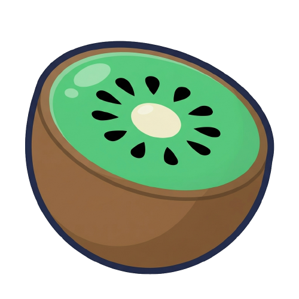
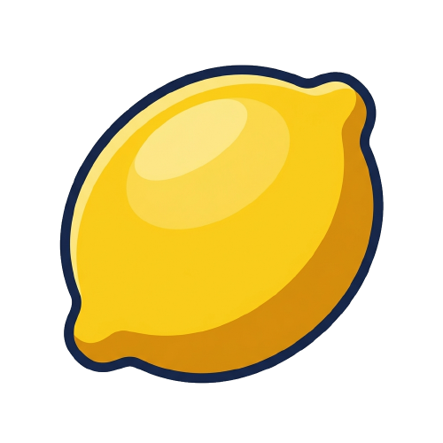
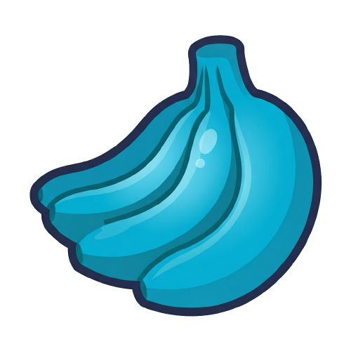

일시정지
🔊
소리 켬
음량
70
계속하기
메인으로
🍊 확률
유물
특성
도움말
닫기
특성 선택
0
📜
↻
3
2배
1
1-2
준비
0
내 유물
0/5
↻
3
닫기
⏸
확률
📜
유물
✨
특성
0
최고
0
스테이지
1-1
점수
0
·
최고
0
NEXT
Lv.
1
MAX
👆 터치
0
➕ 매턴
1
0
⚠️ 위험!
0/70
목표
15
남은 터치
0
➕
1
⚠️
매턴 과일
AD
🐦
10
↔️
15
↕️
15
🧺
22
💣
30
🌟
70
빈 칸을 탭해 과일을 놓으세요
다음 스테이지 ▶
+0
테스트



🐦
↔️
💣
🌟
🍪
개발자
확인
닫기
테스트 도크
유물 고르기
코인 +100
잠그기
닫기
AD
닫기
건너뛰기
📖 도감
닫기
설정
언어
테마
🔊
소리 켬
음량
70
📳
진동
광고 제거
튜토리얼 다시 보기
기록 초기화
개인정보처리방침
닫기
📱
세로로 돌려주세요
화면이 낮아 판이 다 들어가지 않습니다
FRUIT
STAR
톡! 터뜨리는 상큼한 과일
아케이드 모드
스타 러시
도감
⚙️
설정
🏆
랭킹
v0.3.0
게임 오버
▶ 광고 보고 이어하기
다시 하기
메인으로